건설재료시험기사 (2014-03-02 기출문제)
1과목: 콘크리트공학
1. 고압증기양생한 콘크리트에 대한 설명으로 틀린 것은?
- 고압증기양생한 콘크리트는 어느 정도 의 취성을 갖는다.
- 고압증기양생한 콘크리트는 보통양생한 것에 비해 철근의 부착강도가 약 1/2이되므로 철근콘크리트 부재에 적용하는 것은 바람직하지 못한다.
- 고압증기양생한 콘크리트는 보통양생한 것에 비해 백태현상이 감소된다.
- 고압증기양생한 콘크리트는 보통양생한것에 비해 열팽창계수와 탄성계수가 매우 작다.
(정답률: 82%)

2. 일반 콘크리트의 비비기에 관하여 잘못 설명한 것은?
- 비비기를 시작하기 전에 미리 믹서 내부를 모르타르로 부착시켜야 한다.
- 비비기는 미리 정해둔 비비기 시간의 3배 이상 계속해서는 안 된다.
- 믹서 안의 콘크리트를 전부 꺼낸 후에 다음 비비기 재료를 투입하여야 한다.
- 믹서 안에 재료를 투입한 후의 비비기 시간은 가경식 믹서의 경우 3분 이상을 표준으로 한다.
(정답률: 86%)
3. 시방배합 결과 콘크리트 1m3에 사용되는 물은 180kg, 시멘트는 390kg, 잔골재는 700kg, 굵은골재는 1,100kg이었다. 현장 골재의 상태가 다음 표와 같을 때 현장배합에 필요한 굵은 골재량은?
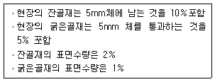
- 1,060kg
- 1,071kg
- 1,082kg
- 1,093kg
(정답률: 53%)
4. 매스 콘크리트의 타설온도를 낮추는 선행냉각(pre-cooling)방법으로 적절하지 않은 것은?
- 냉수나 얼음을 따로따로 혹은 조합해서 배합수로 사용하는 방법
- 냉각한 골재를 사용하는 방법
- 액체질소를 사용하는 방법
- 관로식 냉각 방법
(정답률: 77%)
5. 콘크리트의 품질관리에 쓰이는 관리도 중 계량값 관리도에 속하지 않는 것은?
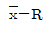
관리도(평균값과 범위관리도)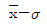
관리도(평균값과 표준편차 관리도)- x 관리도(측정값 자체의 관리도)
- p 관리도(불량률 관리도)
(정답률: 73%)
6. 프리플레이스트 콘크리트에서 주입모르타르의 품질로 적절하지 않은 것은?
- 유하시간의 설정 값은 16~20초를 표준으로 한다.
- 블리딩률의 설정 값은 시험 시작 후 3시간에서의 값이 5% 이하가 되도록 한다.
- 팽창률의 설정 값은 시험 시작 후 3시간에서의 값이 5~10%인 것을 표준으로 한다.
- 모르타르가 굵은 골재의 공극에 주입될 때 재료분리가 적고 주입되어 경화되는 사이에 블리딩이 적으며 소요의 팽창을 하여야 한다.
(정답률: 65%)
7. 시멘트의 수화반응에 의해 생성된 수산화칼슘이 대기중의 이산화탄소와 반응하여 콘크리트의 성능을 저하시키는 현상을 무엇이라고 하는가?
- 염해
- 중성화
- 동결융해
- 알칼리-골재반응
(정답률: 84%)
8. 압축강도에 의한 콘크리트의 품질관리에서 시험을 위해 시료를 채취하는 시기 및 횟수는 일반적인 경우 하루에 치는 콘크리트마다 적어도 몇 회로 하여야 하는가?(단, 콘크리트표준시방서에 의한다.)
- 1회
- 2회
- 3회
- 4회
(정답률: 69%)
9. 배합설계에서 다음 표와 같은 조건일 경우 콘크리트의 물-시멘트비를 결정하면 약 얼마인가?
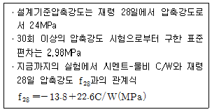
- 45.6%
- 48.3%
- 54.1%
- 57.2%
(정답률: 53%)
10. 수중 불분리성 콘크리트의 타설에 대한 설명으로 틀린 것은?
- 유속이 50mm/s정도 이하의 정수 중에 서 수중 낙하높이 0.5 이하에서 타설한다.
- 콘크리트 펌프로 압송할 경우, 압송압력은 보통 콘크리트의 2~3배 정도 요구된다.
- 품질저하 및 불균일성을 방지하기 위해 수중 유동거리는 10m 이하로 한다.
- 소규모 공사 등에는 버킷을 이용하여 시공할 수도 있다.
(정답률: 40%)
11. 굳지 않은 콘크리트의 슬럼프(slump) 및 슬럼프시험에 대한 설명으로 옳지 않은 것은?
- 슬럼프콘의 규격은 밑면의 안지름은 200mm, 윗면의 안지름은 100mm, 높이는 300mm이다.
- 슬럼프콘에 콘크리트를 채우기 시작하고 나서 슬럼프콘의 들어 올리기를 종료할 때까지의 시간은 3분 이내로 한다.
- 슬럼프의 표준값은 철근콘크리트에서 일반적인 단면인 경우 40~120mm이다.
- 슬럼프콘을 가만히 연직으로 들어 올리고, 콘크리트의 중앙부에서 공시체 높이와의 차를 5mm 단위로 측정하여 이것을 슬럼프 값으로 한다.
(정답률: 67%)
12. 콘크리트의 양생에 대한 설명으로 틀린 것은?
- 고로 슬래그 시멘트를 사용한 경우 ,습윤양생의 기간은 보통 포틀랜드 시멘트를 사용한 경우보다 짧게 하여야 한다.
- 막양생제는 콘크리트 표면의 물빛(水光)이 없어진 직후에 살포하는 것이 좋다.
- 재령 5일이 될 때까지는 해수에 콘크리트가 씻기지 않도록 보호한다.
- 습윤양생을 실시할 경우 거푸집판이 얇든가 또는 건조의 염려가 있을 때는 살수하여 습윤상태로 유지하여야 한다.
(정답률: 68%)
13. 유동화 콘크리트의 슬럼프 증가량은 몇 mm 이하를 원칙으로 하는가?
- 50mm
- 80mm
- 100mm
- 120mm
(정답률: 73%)
14. 콘크리트 비파괴시험방법 중 슈미트헤머에 의한 반발경도법에 대한 설명으로 틀린 것은?
- 콘크리트는 함수율이 증가함에 따라 반발경도가 크게 측정되므로 콘크리트 습윤상태에 따른 보정을 실시하여야 한다.
- 0℃ 이하의 온도에서 콘크리트는 정상보다 높은 반발경도를 나타내므로, 콘크리트 내부가 완전히 융해된 후에 시험해야 한다.
- 타격 위치는 가장자리로부터 100mm 이상 떨어지고 서로 30mm 이내로 근접해서는 안 된다.
- 시험할 콘크리트 부재는 두께가 100mm이상이어야 하며, 하나의 구조체에 고정 되어야 한다.
(정답률: 58%)
15. 일반적으로 연직 시공이음부의 거푸집 제거시기는 콘크리트를 타설하고 난 후 얼마 정도 후에 실시하는 것이 좋은가?(단, 여름의 경우)
- 4~6시간 정도
- 10~15시간 정도
- 1~2일 정도
- 2~3일 정도
(정답률: 67%)
16. 굳지 않은 콘크리트에 관한 설명으로 틀린 것은?
- 잔골재의 세립분 함유량 및 잔골재율이 작으면 콘크리트의 재료분리 경향이 커진다.
- 단위시멘트량을 크게 하면 성형성이 나빠진다.
- 혼합시 콘크리트의 온도가 높으면 슬럼프값은 저하한다.
- 포졸란 재료를 사용하면 세립이 부족한 잔골재를 사용한 콘크리트의 워커빌리티를 개선한다.
(정답률: 60%)
17. 프리스트레스트콘크리트(PSC)와 철근콘크리트(RC)의 비교 설명으로 틀린 것은?
- PSC는 RC에 비하여 강성이 커서 변형이 작고 진동에 강하다.
- PSC는 RC에 비하여 고강도의 콘크리트와 강재를 사용하게 된다.
- PSC는 RC에 비하여 탄성적이고 복원성이 크다.
- PSC는 균열이 발생하지 않도록 설계되기 때문에 내구성 및 수밀성이 좋다.
(정답률: 75%)
18. 일반적인 경우 콘크리트의 건조수축에 가장 큰 영향을 미치는 요인은?
- 단위시멘트량
- 단위수량
- 잔골재율
- 단위굵은골재량
(정답률: 65%)
19. 경화 전의 콘크리트에 발생하는 균열에 관한 설명 중 틀린 것은?
- 초기수축균열은 콘크리트로부터의 급격한 수분증발이 주요 발생원인이다.
- 초기수축균열을 플라스틱수출균열이라고도 한다.
- 침하균열은 블리딩이 많은 콘크리트일수록 적게 된다.
- 침하균열은 콘크리트를 친 후 1~3시간 지나 상부표면에 주로 발생한다.
(정답률: 59%)
20. 거푸집 및 동바리의 구조계산에 관한 설명으로 틀린 것은?
- 고정하중은 철근콘크리트와 거푸집의 중량을 고려하여 합한 하중이며, 철근의 중량을 포함한 콘크리트의 단위중량은 보통콘크리트에서는 24kN/m3을 적용하고, 거푸집 하중은 최소 0.4kN/m3이상을 적용한다.
- 활하중은 작업원 ,경량의 장비하중, 기타 콘크리트 타설에 필요한 자재 및 공구 등의 시공하중, 그리고 충격하중을 포함한다.
- 동바리에 작용하는 수평방향 하중으로 는 고정하중의 2%이상 또는 동바리 상단의 수평방향 단위 길이당 1.5kN/m 이상 중에서 큰 쪽의 하중이 동바리 머리부분에 수평방향으로 작용하는 것으로 가정한다.
- 벽체 거푸집의 경우에는 거푸집 측면에 대하여 5.0kN/m2이상의 수평방향 하중이 작용하는 것으로 본다.
(정답률: 53%)
2과목: 건설시공 및 관리
21. 토공에서 토취장 선정에 고려하여야 할 사항으로 틀린 것은?
- 토질이 양호할 것
- 성토장소를 향하여 상향구배(1/5~1/10)일 것
- 토량이 충분할 것
- 운반로 조건이 양호하며, 가깝고 유지관리가 용이할 것
(정답률: 73%)
22. 불도저로 압토와 리핑 작업을 동시에 실시한다. 각 작업 시의 작업량이 다음 표와 같을 때 시간당 작업량은?
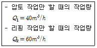
- 24m3/h
- 30m3/h
- 34m3/h
- 50m3/h
(정답률: 55%)
23. 토공에 대한 다음 설명 중 틀린 것은?
- 시공기면은 현재 공사를 하고 있는 면을 말한다.
- 토공은 굴착, 싣기, 운반, 성토(사토) 등의 4공정으로 이루어진다.
- 준설은 수저의 토사 등을 굴착하는 작업을 말한다.
- 법면은 비탈면으로 성토, 절토의 사면을 말한다.
(정답률: 67%)
24. PERT기법에 의한 공정관리 방법에서 정상시간이 5일, 비관적인 시간이 13일, 낙관적인 시간이 3일인 경우 공정상의 기대시간은?
- 3일
- 5일
- 6일
- 7일
(정답률: 75%)
25. 지반안정용액을 주수하면서 수직굴착하고 철근콘크리트를 타설한 후 굴착하는 공법으로 타공법에 비해 차수성이 우수하고 지반변위가 작은 토류공법은?
- 강널말뚝 흙막이벽
- 벽강관 널말뚝 흙막이벽
- 벽식 연속 지중벽 공법
- Top down 공법
(정답률: 61%)
26. 연약지반처리 공법으로서 적당하지 않은 것은?
- 바이브로플로테이션 공법
- 침매공법
- 버티컬 드레인 공법
- 치환공법
(정답률: 30%)
27. 항만공사에서 간만의 차가 큰 장소에 축조되는 항은?
- 하구항(coastal harbor)
- 개구항(open harbor)
- 폐구항(closed harbor)
- 피난항(refuge harbor)
(정답률: 73%)
28. 지하 굴착에 따라 수반되는 지하수를 배출할 때 주변지반에 미치는 영향을 설명한 것으로 틀린 것은?
- 흙막이벽에 작용하는 주동토압의 감소
- 흙막이벽에 작용하는 수동토압의 감소
- 히빙(Heaving) 방지
- 지반의 압축침하와 압밀침하 발생
(정답률: 48%)
29. 아스팔트 포장 시공 단계에서 보조기층의 보호 및 수분의 모관상승을 차단하고 아스팔트 혼합물과의 접착성을 좋게 하기 위하여 실시 하는 것은 무엇인가?
- 택 코트(tack coat)
- 프라임 코트(prime coat)
- 실 코트(seal coat)
- 컬로 코트(color coat)
(정답률: 69%)
30. 공상현상에 대한 대책으로 올바르지 않은 것은?
- 말뚝은 수직으로 굴착하고 철근도 수직으로 세운다.
- 철근이 뽑혀올라오지 않도록 slime의 생성을 촉진한다.
- 철근망을 달아매는 기계를 사용하여 세우는 도중의 비틀림, 좌굴을 방지한다.
- 콘크리트를 Chute 내에서 절대로 흘리지 않게 한다.
(정답률: 56%)
31. 토적곡선(mass curve)의 성질에 대한 설명 중 옳지 않은 것은?
- 토적곡선이 기선 위에서 끝나면 토량이 부족하고, 반대이면 남는 것을 뜻한다.
- 곡선의 저점은 성토에서 절토로의 변이 점이다.
- 동일단면 내에서 횡방향 유용토는 제외 되었으므로 동일단면 내의 절토량과 성토량을 구할 수 없다.
- 교량 등의 토공이 없는 곳에는 기선에 평행한 직선으로 표시한다.
(정답률: 56%)
32. 10,000m3(자연상태)의 사질토를 4m3의 덤프트럭으로 운반하려고 한다. 필요한 트럭의 대수는?(단, 사질토의 토량변화율 L=1.25, C=0.88)
- 3,125대
- 2,200대
- 2,841대
- 2,000대
(정답률: 44%)
33. 이동식 작업차 또는 가설용 트러스를 이용하여 교각의 좌우로 평형을 유지하면서 분할된 거더(길이 2~5m)를 순차적으로 시공하는 교량가설공법은?
- FCM 공법
- FSM 공법
- ILM 공법
- MSS 공법
(정답률: 37%)
34. 암거의 배열방식 중 인접한 높은 지대에서 배수지구로 스며드는 침투수를 차단하기 위하여 구역둘레에 배수암거를 매설하는 방식은?
- 빗식
- 자연식
- 어골식
- 차단식
(정답률: 49%)
35. 아스팔트포장의 파손현상 중 차량하중에 의해 발생한 변형량의 일부가 회복되지 못하여 발생하는 영구변형으로 차량통과위치에 균일하게 발생하는 침하를 보이는 아스팔트포장의 대표적인 파손현상을 무엇이라 하는가?
- 피로균열
- 저온균열
- 라벨링(Revelling)
- 러팅(Rutting)
(정답률: 65%)
36. 다음 그림과 같은 네트워크 공정표에서 전체 공기는?
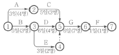
- 12일
- 15일
- 18일
- 21일
(정답률: 62%)
37. 버킷용량 2.0m3인 백호로 15t, 덤프 트럭에 토사를 적재하여 운반하고자 한다. 기타의 조건이 다음과 같을 때 트럭에 적재하는데 소요되는 시간은?
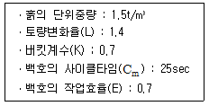
- 2.37분
- 3.33분
- 4.67분
- 5.95분
(정답률: 31%)
38. 터널 라이닝(lining) 시 인버트 아치(invert arch)를 필요로 하는 경우는?
- 용수가 많은 터널에서
- 구배가 큰 터널에서
- 지질이 연약하고 불량한 터널에서
- 라이닝 콘크리트를 경제적으로 하기 위하여
(정답률: 48%)
39. 암석을 발파할 때 암석이 외부의 공기 및 물과 접하는 표면을 자유면이라 한다. 이 자유면으로부터 폭약의 중심까지의 최단 거리를 무엇이라 하는가?
- 보안거리
- 누두반경
- 적정심도
- 최소저항선
(정답률: 60%)
40. 트랙터의 단위중량 17t, 전장비 중량 23t, 접지장 270cm, 캐터필러 폭 55cm, 캐터필러의 중심거리가 2m일 때 불도저의 평균 접지압은 얼마인가?
- 0.37kg/cm2
- 0.77kg/cm2
- 1.11kg/cm2
- 2.96kg/cm2
(정답률: 54%)
3과목: 건설재료 및 시험
41. 다음 콘크리트용 혼화재료에 대한 설명 중 틀린 것은?
- 감수제는 시멘트 입자를 분산시켜 콘크리트의 단위수량을 감소시키는 작용을 한다.
- 촉진제는 시멘트의 수화작용을 촉진하는 혼화제로서 보통 나프탈린 설폰산염을 많이 사용한다.
- 지연제는 여름철에 레미콘의 슬럼프 손실 및 콜드 조인트의 방지 등에 효과가 있다.
- 급결제는 시멘트의 응결시간을 촉진하기 위하여 사용하며 숏크리트, 물막이 공법 등에 사용한다.
(정답률: 59%)
42. 실리카퓸이 콘크리트의 성질에 미치는 영향으로 옳지 않은 것은?
- 실리카퓸의 혼합량을 증가시키면서 목표슬럼프를 유지하기 위하여 필요한 단위수량을 감소시킬 수 있다.
- 실리카퓸은 매우 미세한 입자이기 때문에 블리딩과 재료의 분리를 감소시킨다.
- 실리카퓸은 초미립분말이기 때문에 조기에 포졸란 반응이 발생한다.
- 실리카퓸의 혼합률이 증가할수록 어느 수준까지는 압축강도가 증가한다.
(정답률: 38%)
43. 일반적으로 풍화한 시멘트에서 나타나는 성질이 아닌 것은?
- 응결지연
- 비중감소
- 강열감량 감소
- 강도발현 저하
(정답률: 57%)
44. 암석은 생성원인에 따라 화성암, 변성암, 퇴적암으로 나뉜다. 다음 중에서 생성원인이 다른 암석은?
- 현무암
- 섬록암
- 화강암
- 편마암
(정답률: 51%)
45. 어떤 재료의 푸아송 비가 1/3이고, 탄성계수는 2×105MPa일 때 전단 탄성계수는?
- 25,600MPa
- 75,000MPa
- 544,000MPa
- 229,500MPa
(정답률: 56%)
46. 목재의 건조방법 중 인공건조법이 아닌 것은?
- 끓임법(자비법)
- 열기건조법
- 공기건조법
- 증기건조법
(정답률: 65%)
47. 콘크리트용 혼화재료로 사용되는 고로슬래그 미분말에 대한 설명 중 틀린 것은?
- 고로슬래그 미분말을 사용한 콘크리트는 보통콘크리트보다 콘크리트 내부의 세공경이 작아져 수밀성이 향상된다.
- 고로슬래그 미분말은 플라이애시나 실리카퓸에 비해 포틀랜드시멘트와의 비중차가 작아 혼화재로 사용할 경우 혼합 및 분산성이 우수하다.
- 고로슬래그 미분말을 혼화재로 사용한 콘크리트는 염화물이온 침투를 억제하여 철근부식 억제효과가 있다.
- 고로슬래그 미분말의 혼합률을 시멘트 중량에 대하여 70% 혼합한 경우 중성화 속도가 보통콘크리트의 1/2정도로 감소되어 내구성이 향상된다.
(정답률: 46%)
48. 로스앤젤레스 마모시험에서 강철구를 넣어 회전한 후 시험기로부터 꺼낸 시료를 체가름 한다. 이때 사용되는 체의 규격은?
- 1.2mm
- 1.7mm
- 2.5mm
- 5mm
(정답률: 30%)
49. 시멘트의 응결시험 방법으로 옳은 것은?
- 브레인 방법
- 오토 클레이브 방법
- 길모어침에 의한 방법
- 비비 시험
(정답률: 57%)
50. Cut back asphalt중 건조가 가장 빠른 것은?
- RC
- MC
- SC
- LC
(정답률: 53%)
51. 잔골재에 대한 체가름 시험을 한 결과가 다음 표와 같을 때 조립률은? (단, 10mm 이상 체에 잔류된 잔골재는 없다.)
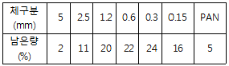
- 1.0
- 2.63
- 2.77
- 3.15
(정답률: 50%)
52. 건설용 재료로 목재를 사용하기 위하여 목재를 건조시키는 목적 및 효과로 틀린 것은?
- 가공성을 향상시킨다.
- 균류의 발생을 방지할 수 있다.
- 수축균열 및 부정변형을 방지할 수 있다.
- 목재의 중량을 경감시킬 수 있다.
(정답률: 47%)
53. 잔골재의 유해물 함유량의 한도 중 점토덩어리인 경우 중량백분율로 최대치는 얼마인가?
- 1%
- 2%
- 3%
- 4%
(정답률: 37%)
54. 포틀랜드 시멘트의 주성분 비율 중 수경률(H.M.Hydraulic Modulus)에 대한 설명으로 옳지 않은 것은?
- 수경률은 CaO 성분이 높을 경우 커진다.
- 수경률은 다른 성분이 일정할 경우 석고량이 많을 경우 커진다.
- 수경률이 크면 초기강도가 커진다.
- 수경률이 크면 수화열이 큰 시멘트가 생긴다.
(정답률: 41%)
55. 아스팔트 혼합물 중 역청 재료량(Wa)이 5.0%, 실측 밀도(d)가 2.355g/cm3, 역청재료의 밀도(Ga)가 1.03g/cm3이고 공극률(V)이 5.3%일 때 포화도(S)는?
- 62.0%
- 64.0%
- 68.0%
- 66.0%
(정답률: 23%)
56. 면이 원칙적으로 거의 사각형에 가까운 것으로 길이는 4면을 쪼개어 면에 직각으로 잰 길이는 면의 최소변에 1.5배 이상인 석재는?
- 사고석
- 각석
- 판석
- 견치석
(정답률: 49%)
57. 토목섬유(geotextiles)의 특징에 대한 설명으로 틀린 것은?
- 인장강도가 크다.
- 탄성계수가 작다.
- 차수성, 분리성, 배수성이 크다.
- 수축을 방지한다.
(정답률: 57%)
58. 습윤상태의 모래 600g을 건조로에서 건조시킨 후 550g이 되었다. 이 모래의 흡수율이 4%일 때 표면 수율은?
- 2.9%
- 3.4%
- 4.4%
- 4.9%
(정답률: 18%)
59. 다이너마이트 중 폭발력이 가장 강하여 터널 과 암석발파에 주로 사용되는 것은?
- 규조토 다이너마이트
- 교질 다이너마이트
- 스트레이트 다이너마이트
- 분산 다이너마이트
(정답률: 57%)
60. 아스팔트 연화점시험에서 사용되지 않는 기구는?
- 다짐용 해머
- 가열중탕
- 황동제 환(環)
- 강구
(정답률: 50%)
4과목: 토질 및 기초
61. 암질을 나타내는 항목과 직접 관계가 없는 것은?
- N치
- RQD값
- 탄성파속도
- 균열의 간격
(정답률: 45%)
62. 압밀 시험에서 시간-압축량 곡선으로부터 구할 수 없는 것은?
- 압밀계수 (Cv)
- 압축지수 (Cc)
- 체적변화 계수(mv)
- 투수계수(k)
(정답률: 35%)
63. 말뚝기초의 지반거동에 관한 설명으로 틀린 것은?
- 연약지반상에 타입되어 지반이 먼저 변형하고 그 결과 말뚝이 저항하는 말뚝을 주동말뚝이라 한다.
- 말뚝에 작용한 하중은 말뚝 주변의 마찰력과 말뚝선단의 지지력에 의하여 주변지반에 전달된다.
- 기성말뚝을 타입하면 전단파괴를 일으키며 말뚝 주위의 지반은 교란된다.
- 말뚝 타입 후 지지력의 증가 또는 감소현상을 시간효과(Time effect)라 한다.
(정답률: 48%)
64. 연약지반개량공법 중 프리로딩공법에 대한 설명으로 틀린 것은?
- 압밀침하를 미리 끝나게 하여 구조물에 잔류침하를 남기지 않게 하기 위한 공법이다.
- 도로의 성토나 항만의 방파제와 같이 구조물 자체의 일부를 상재하중으로 이용하여 개량 후 하중을 제거할 필요가 없을 때 유리하다.
- 압밀계수가 작고 압밀토층 두께가 큰 경우에 주로 적용한다.
- 압밀을 끝내기 위해서는 많은 시간이 소요되므로, 공사기간이 충분해야 한다.
(정답률: 37%)
65. 암반층 위에 5m 두께의 토층이 경사 15˚의 자연사면으로 되어 있다. 이 토층은 c=1.5t/m2,ø=30°, γsat=1.8t/m3이고, 지하수면은 토층의 지표면과 일치하고 침투는 경사면과 대략 평행이다. 이때의 안전율은?
- 0.8
- 1.1
- 1.6
- 2.0
(정답률: 27%)
66. 크기가 30cm×30cm의 평판을 이용하여 사질토 위에서 평판재하시험을 실시하고 극한 지지력 20t/m2을 얻었다. 크기가 1.8m×1.8m인 정사각형의 기초의 총허용하중은 약 얼마인가?(단, 안전율 3을 사용)
- 22ton
- 66ton
- 130ton
- 150ton
(정답률: 40%)
67. 흙의 투수계수 K에 관한 설명으로 옳은 것은?
- K는 점성계수에 반비례한다.
- K는 형상계수에 반비례한다.
- K는 간극비에 반비례한다.
- K는 입경의 제곱에 반비례한다.
(정답률: 39%)
68. 다음 중 흙의 연경도(consistency)에 대한 설명 중 옳지 않은 것은?
- 액성한계가 큰 흙은 점토분을 많이 포함하고 있다는 것을 의미한다.
- 소성한계가 큰 흙은 점토분을 많이 포함하고 있다는 것을 의미한다.
- 액성한계나 소성지수가 큰 흙은 연약 점토지반이라고 볼 수 있다.
- 액성한계가 소성한계와 가깝다는 것은 소성이 크다는 것을 의미한다.
(정답률: 31%)
69. 옹벽배면의 지표면 경사가 수평이고, 옹벽배면 벽체의 기울기가 연직인 벽체에서 옹벽과 뒷채움 흙 사이의 벽면마찰각(δ)을 무시할 경우, Rankine토합과 Coulomb도입의 크기를 비교하면?
- Rankine토압이 Coulomb토압보다 크다.
- Coulomb토압이 Rankine토압보다 크다.
- 주동토압은 Rankine토압이 더 크고, 수동토압은 Coulomb토압이 더 크다.
- 항상 Rankine토압과 Coulomb토압의 크기는 같다.
(정답률: 48%)
70. 그림과 같이 모래층에 널말뚝을 설치하여 물막이공 내의 물을 배수하였을 때, 분사현상이 일어나지 않게 하려면 얼마의 압력을 가하여야 하는가? (단, 모래의 비중은 2.65, 간극비는 0.65, 안전율은 3)
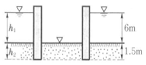
- 6.5t/m2
- 13t/m2
- 33t/m2
- 16.5t/m2
(정답률: 30%)
71. 다음의 경우 중 유효응력이 증가하는 것은?
- 땅속의 물이 정지해 있는 경우
- 땅속의 물이 아래로 흐르는 경우
- 땅속의 물이 위로 흐르는 경우
- 분사현상이 일어나는 경우
(정답률: 39%)
72. 내부마찰각 ø=30°, 점착력 c=0인 그림과 같은 모래지반이 있다. 지표에서 6m 아래 지반의 전단강도는?
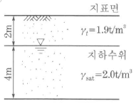
- 7.8t/m2
- 9.8t/m2
- 4.5t/m2
- 6.5t/m2
(정답률: 37%)
73. 포화 점토에 대해 베인전단시험을 실시하였다. 베인의 직경과 높이는 각각 7.5cm 와 15cm이고, 시험 중 사용한 최대 회전 모멘트는 250kgㆍcm이다. 점성토의 액성한계는 65%이고 소성한계는 30%이다. 설계에 이용할 수 있도록 수정 비배수 강도를 구하면? (단, 수정계수(μ)=1.7-0.54log(PI)를 사용하고, 여기서 PI는 소성지수이다.)
- 0.8t/m2
- 1.40t/m2
- 1.82t/m2
- 2.0t/m2
(정답률: 27%)
74. 어떤 모래의 건조단위중량이 1.7t/m3이고, 이모래의 γdmax=1.8t/m3, γdmin=1.6t/m3이라면, 상대밀도는?
- 47%
- 49%
- 51%
- 53%
(정답률: 33%)
75. 통일분류법(統一分類法)에 의해 SP로 분류 된 흙의 설명으로 옳은 것은?
- 모래질 실트를 말한다.
- 모래질 점토를 말한다.
- 압축성이 큰 모래를 말한다.
- 입도분포가 나쁜 모래를 말한다.
(정답률: 47%)
76. 다음 그림과 같이 점토질 지반에 연속기초가 설치되어 있다. Terzaghi공식에 의한 이 기초의 허용 지지력 qa는 얼마인가? (단, ø=0이며, 폭(B)=2m, Nc=5.14, Nq=1.0, Nγ=0, 안전율 Fs=3이다.)
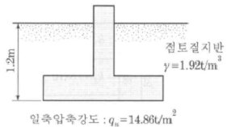
- 6.4t/m2
- 13.5t/m2
- 18.5t/m2
- 40.49t/m2
(정답률: 31%)
77. 직경 30cm 콘크리트 말뚝을 단동식 증기해머로 타입하였을 때 엔지니어링 뉴스 공식을 적용한 말뚝의 허용지지력은?(단, 타격에너지=3.6tㆍm, 해머효율=0.8, 손실상수=0.25cm, 마지막 25mm관입에 필요한 타격횟수=5)
- 64t
- 128t
- 192t
- 384t
(정답률: 28%)
78. 그림과 같이 같은 두께의 3층으로 된 수평 모래층이 있을 때 모래층 전체의 연직방향 평균투수계수는 ?(단, k1, k2,k3는 각 층의 투수 계수임)
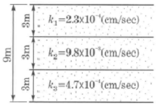
- 2.88×10-3cm/sec
- 4.56×10-4cm/sec
- 3.01×10-4cm/sec
- 3.36×10-5cm/sec
(정답률: 40%)
79. 모래시료에 대해서 압밀배수 삼축압축시험을 실시하였다. 초기 단계에서 구속응력(σ3)은 100kg/cm2이고 전단파괴 시에 작용된 축차응력(σdf)은 200kg/cm2이었다. 이와 같은 모래시료의 내부마찰각(ø) 및 파괴면에 작용하는 전단응력(γf)의 크기는?
- ø=30˚, γf=115.47kg/cm2
- ø=40˚, γf=115.47kg/cm2
- ø=30˚, γf=86.60kg/cm2
- ø=40˚, γf=86.60kg/cm2
(정답률: 29%)
80. 흐트러지지 않은 연약한 점토시료를 채취하여 일축압축시험을 실시하였다. 공시체의 직경이 35mm, 높이가 80mm이고 파괴 시의 하중계의 읽음값이 2kg, 축방향의 변형량이 12mm일 때 이시료의 전단강도는?
- 0.04kg/cm2
- 0.06kg/cm2
- 0.08kg/cm2
- 0.1kg/cm2
(정답률: 33%)